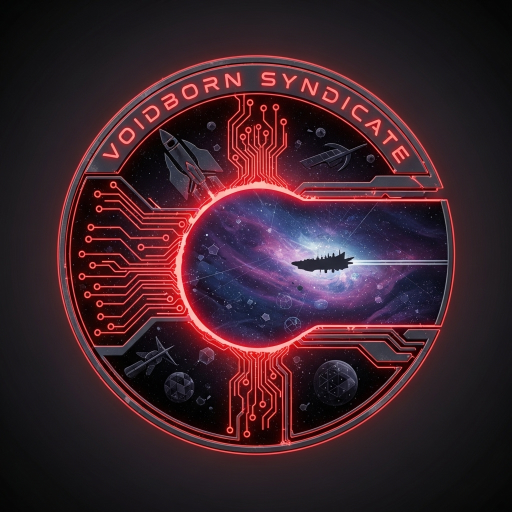

The Apex Separatist Consortium
Order Through Sovereignty
The Apex Separatist Consortium is a sovereign syndicate built upon the principles of strategic autonomy, galactic reclamation, and the pursuit of forbidden knowledge. Our presence is known. Our reach is absolute.

Factions of the Consortium

Voidborn Syndicate
Shadowy brokers and smugglers who thrive in the lawless reaches of space.
Enter

Specter Network
Masters of espionage and digital warfare, controlling secrets across the Consortium.
Enter
Shadowblade Mercenary Guild
Mercenaries feared for their ruthlessness and loyalty to the highest bidder.
Enter